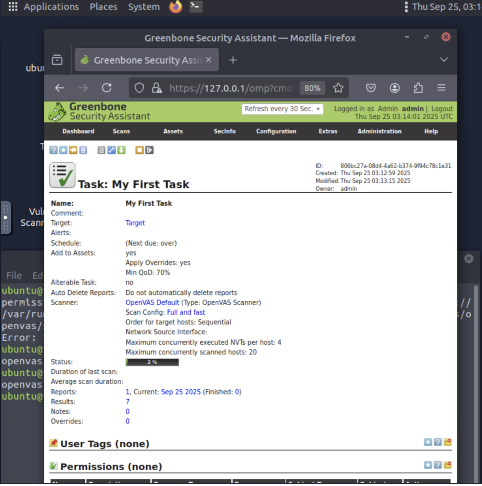
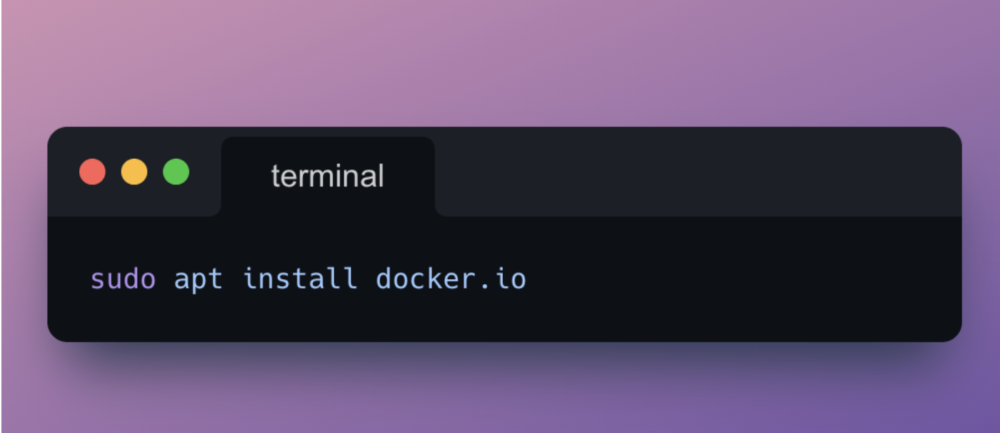
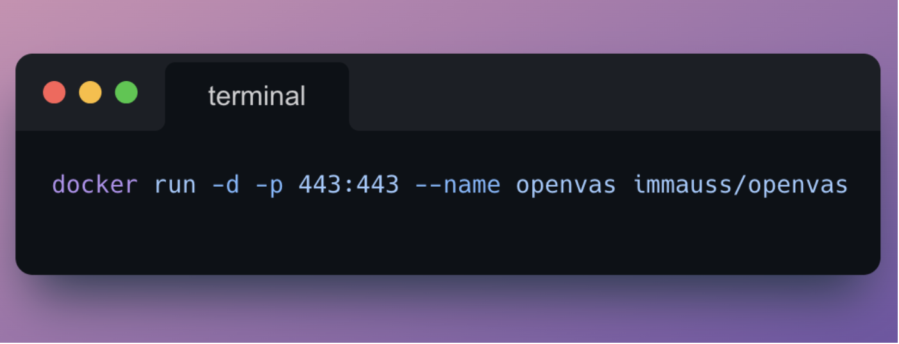
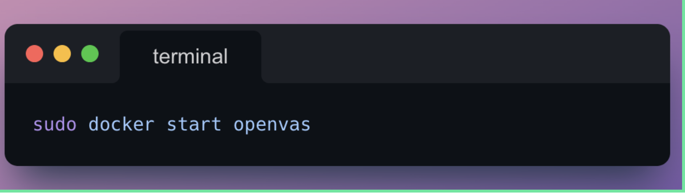
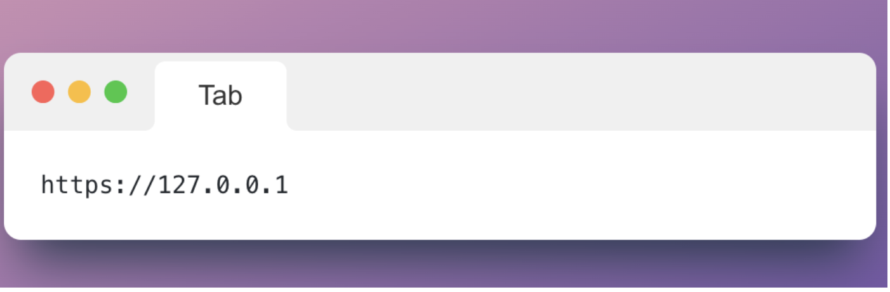
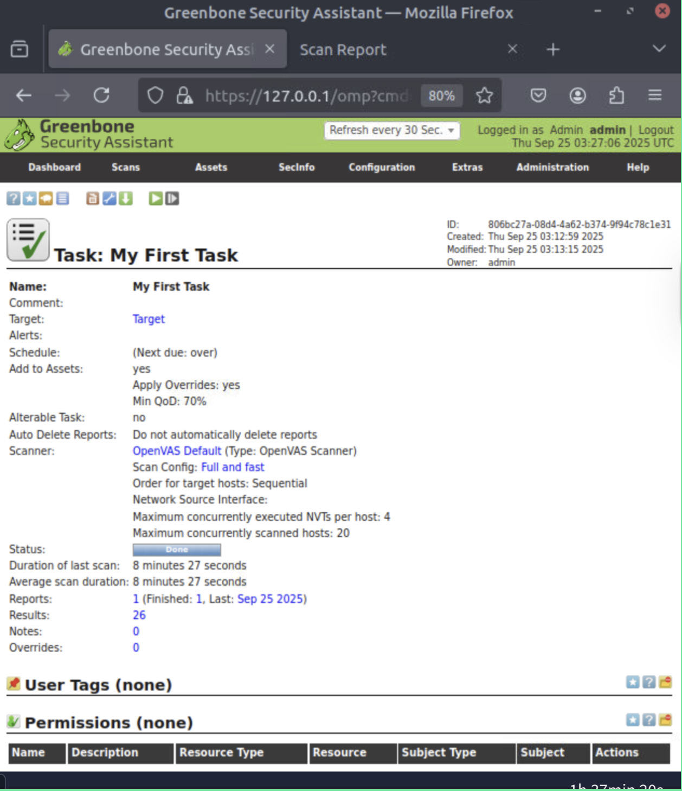
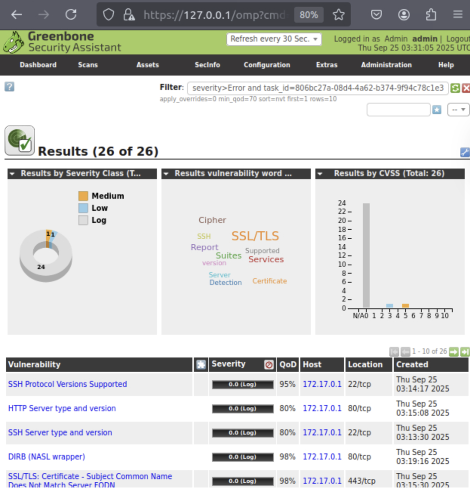
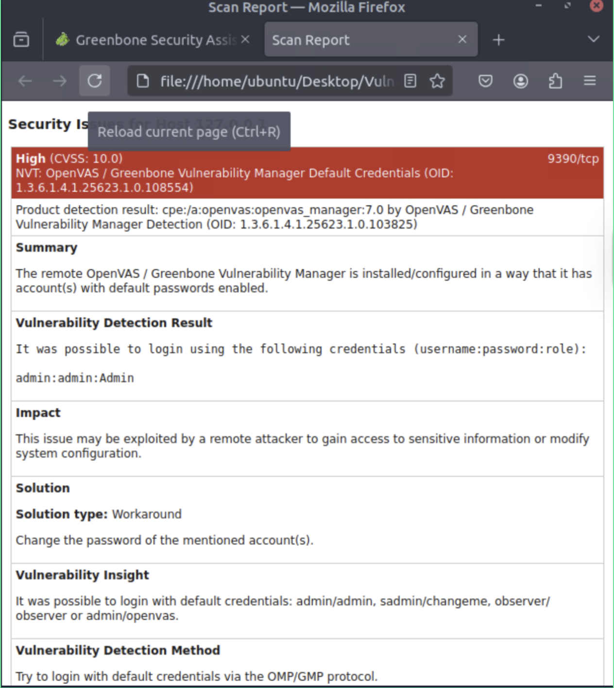

WHAT IS VULNERABILITY SCANNING?
Vulnerability scanning is the inspection of digital systems to find weaknesses — and it's an important compliance requirement of many regulatory bodies.
A window without bars or locks = an open port with no protections.
A cracked wall = outdated software with known bugs.
A flimsy door = weak passwords.
Patching is like adding locks, repairing cracks, or installing gates to make the house safer.
Another way to think about it: it's like running a diagnostic scan on your car — low tire pressure, bad brakes, a check engine light. You fix the problems before the car breaks down or becomes unsafe.
TYPES OF VULNERABILITY SCANS
CVE & CVSS: READING THE RESULTS
When you run a vulnerability scan with a tool like OpenVAS, you don't just get a list of problems — each finding is usually tied to a CVE ID (Common Vulnerabilities and Exposures). Think of it as the vulnerability's "license plate number" in a global database of known flaws.
Year → when the vulnerability was published or discovered
Digits → a unique identifier, often four or more numbers
Example: CVE-2023-12345 — a flaw published in 2023, entry number 12345.
The CVE system is maintained by MITRE Corporation, which also develops the ATT&CK framework.
Alongside CVE IDs, each finding is scored with CVSS (Common Vulnerability Scoring System) — a 0–10 scale that tells you how severe a vulnerability is. Together, CVE and CVSS help you prioritize: which ones need patching right away, and which can wait.
HOW I SET UP OPENVAS
I set up OpenVAS in an Ubuntu lab environment. Since OpenVAS runs inside a container, my first step was installing Docker — a platform that bundles applications with everything they need to run in lightweight, portable containers.
Once Docker was ready, I pulled down the Immauss OpenVAS container, which made setup much faster than building from scratch. Running the container mapped OpenVAS to port 443, so I could open the web interface at https://127.0.0.1. After logging in with the default credentials, I was greeted by the Greenbone Security Assistant (GSA) dashboard — and ready to launch my first scan.
OpenVAS walks you through a handful of setup steps — defining a target, configuring a task, and choosing a scan type. Once those were in place, I hit Start Scan.

THE SCAN: RUNNING IT
I named it My First Task and chose the "Full and fast" scan config. The scan ran sequentially across hosts with overrides applied. The status bar crept up from 2%... and I waited.





THE RESULTS
The scan finished with 26 findings. The majority were low-severity or informational logs, with 1 medium vulnerability. The dashboard showed a pie chart of severity classes, a bar chart of vulnerabilities by CVSS score, and a word cloud — SSL/TLS came up a lot in mine.

THE BIG ONE: CVSS 10.0
This was the biggest eye-opener. OpenVAS flagged a critical vulnerability scoring CVSS 10.0 — the system was running on default credentials (admin:admin).

WRAP UP
Running this first vulnerability scan with OpenVAS was such a proud moment. Up until now, most of my cybersecurity learning has been theory — reading about CVEs, CVSS, scanning tools. Finally getting hands-on, setting up the environment, running the scan, and seeing real vulnerabilities pop up — including a critical CVSS 10 — made everything feel real. I can't wait to keep practicing, dive deeper into authenticated scans, and learn how to remediate the issues I find. This is just the beginning. But every lab like this makes me feel one step closer to becoming the security analyst I want to be.
Theory is great, but this lab reminded me: nothing beats hands-on practice.